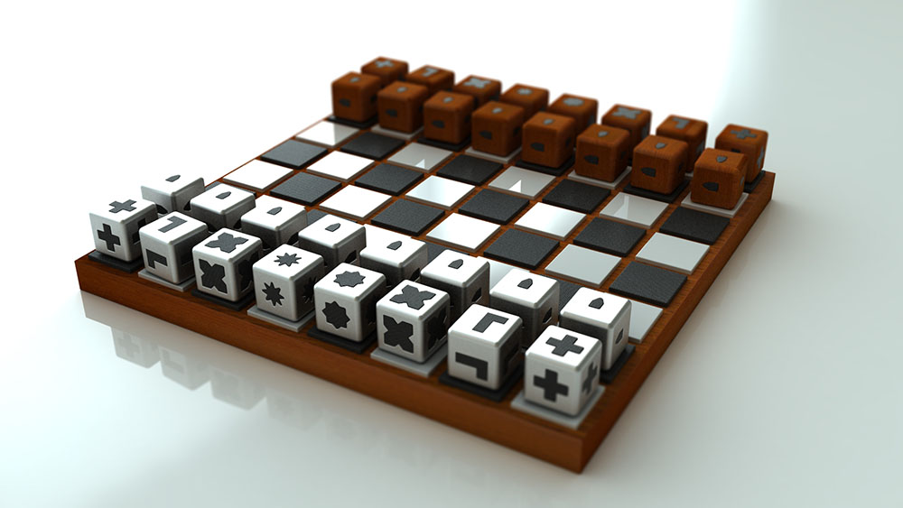
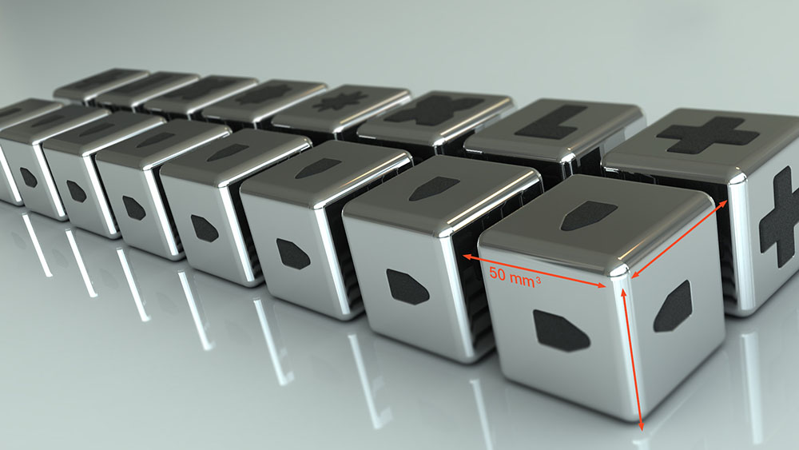
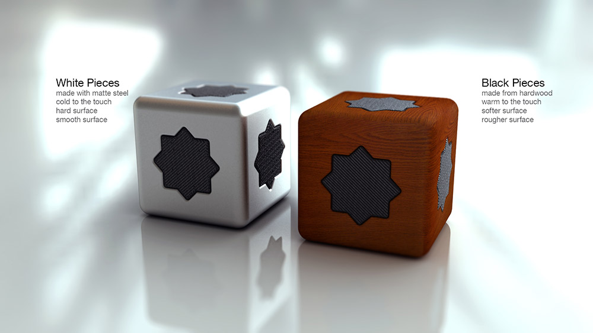
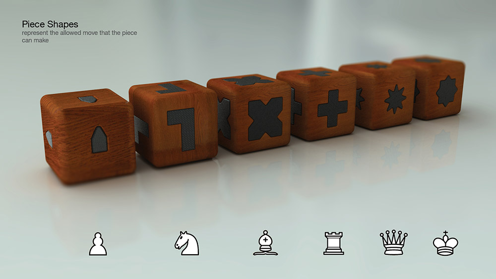
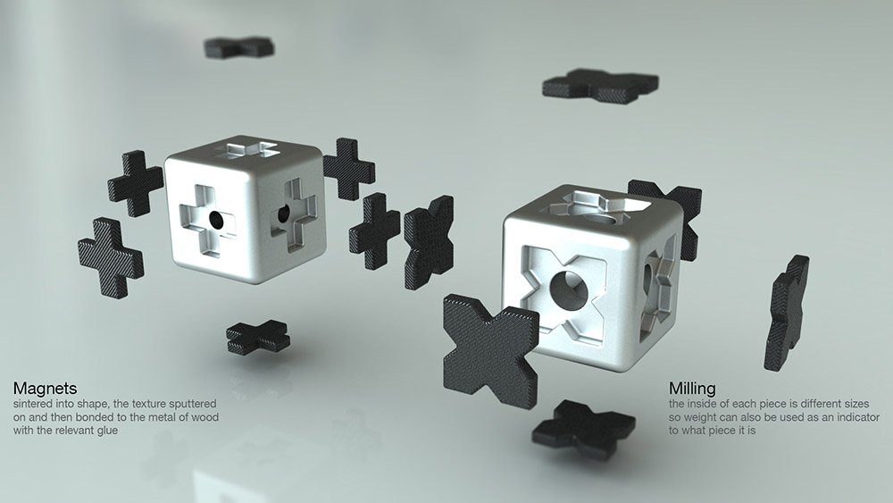
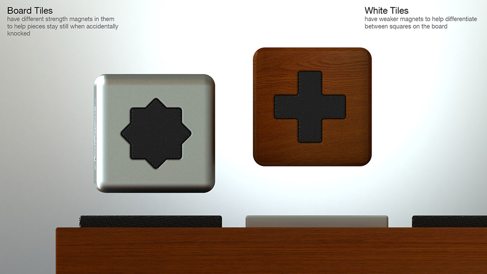
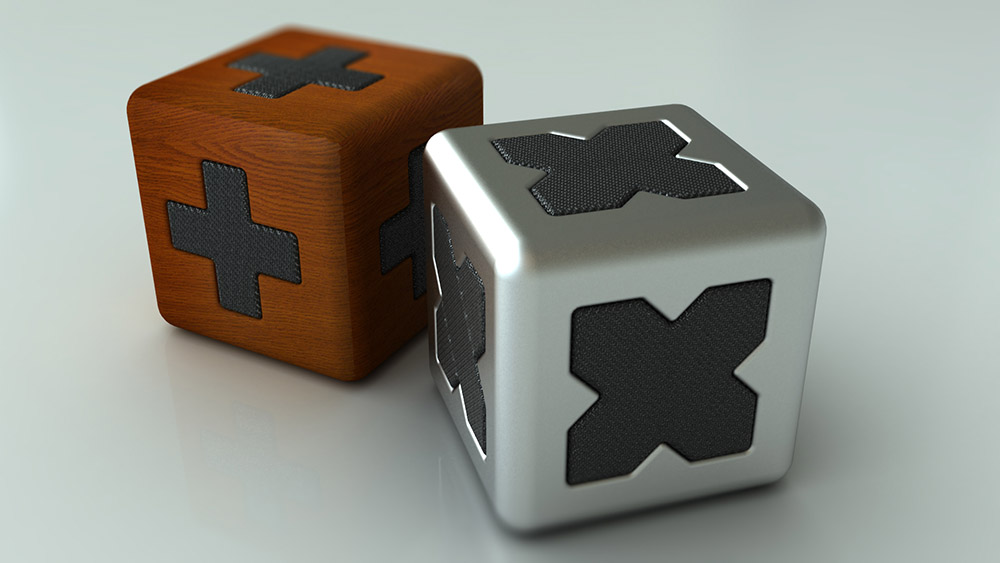

Chess Set for the Blind
AKA How to design a product in 10 days
- 
- 
- 
- 
- 
- 
- 
Introduction
I thought it might be interesting for other people to see how I manage my workflow and how I design. I probably don’t design like anybody else, but I’m okay with that.
I decided that the best way to show this would be to run a design project live over a very short period of time so it could retain momentum. I would work on the project a bit every day over 10 days and post my process and results onto various social media platforms. It also meant that visitors could have a direct and immediate impact on the project as it happened.
It also meant that visitors could have a direct and immediate impact on the project as it happened.
The Brief
To design a chess set for the blind and visually impaired in 10 days.
The product must be viable, manufacturable, relevant to the user group, innovative. All the research, concept development, design detailing, and 3D modelling must be completed within these 10 days.
DAY ONE


Here’s a couple of things I have found out already: Deborah Tan has already designed a chess set for the blind. I was expecting somewhere that it had already been done. What I like about this is the shape of the piece dictates where it should move. I’m not too sure about that lack of differentiation between the sides. I’ll throw this into the melting pot of images that I am creating and we’ll see where it takes us.

I created an inspiration deck of found images to help my mind focus.
Also found a website and a PDF to read:
dinf.ne.jp/doc/english/Us_Eu/conf/z19/z19001/z1900117.html
DRAFT Tactile-Braille Accessibility Guidelines.pdf

Here's a very quick project plan so I can get an idea of when I should be panicking.


A couple of pages from my notebook.
Summary:
Here’s a quick summation of today’s work on this project.
It’s been done before. No surprises there.
My somewhat limited research favours designing with touch and tactility in mind. This appears to be the most appropriate sense to work with.
The board and the pieces do not necessarily have to confirm to traditional standards of shape. I like the idea of the piece shape suggesting the movement of the piece.
There’s a need to differentiate between the pieces as well as what side they are on.
Is there a need to accommodate spectators who can see into the design?
DAY TWO
I’ve been creating some quick sketches using a creative process called 10 in 20. It’s very quick and easy and is used to circumnavigate your inner critic and get raw ideas down on paper.
Creative Technique: 10-in-20

All you have to do is draw 10 concepts in 20 minutes. That’s 2 minutes a concept. So you have no time to worry about whether it’s a good idea or not. You just have to get it onto paper and move onto the next one. When you draw a blank for an idea, look round the room and draw the first thing you see, then try an turn that into a concept.
You can then evaluate these ideas straight away (e.g. good, bad, weird, fuzzy) or sketch a few concepts from the ideas to work them out a little better before evaluating them.
I’ll leave these to fester for a couple of hours to make my brain forget about them a little and then come back and have a look at them later on today and sketch some of them out a bit better and in more details. There’s no evaluation going on yet. The next couple of days is going to be nothing but generating ideas.

This is a rough plan for the design process I’m using. Since I’ve given myself a brief already, I can probably start the process from half way through. I’d love to do a solid amount of primary research because that is the part of the design process that throws up unique and innovative observations and insights.
There’s a couple of things that have come out of today’s research and sketching:
When sight is impaired, other senses take over. Touch and hearing are the senses most likely to be useful in this process compared with taste and smell.
Blind from birth will have a different experience that people who became blind after birth due to reference memories.
It doesn’t matter if people watching know what’s going on. The product will be there to facilitate the players, not the observers.
Summary: Less research and more sketching was done today. A lot of the sketches aren’t really worthy of the eyes of others because they are mainly me trying to get ideas down out of the ether and nailed onto paper. Then there’s been some sketching based on those nailed down ideas to see if any of them have legs to develop into concepts. A lot of this early sketching is feeling around trying to get an idea of what could be. It’s more like visual brainstorming that creating any concrete ideas. On DAY THREE, more sketching. And coming up with some sort of design statement that concepts can be evaluated against.
DAY THREE
I’ve taken everything I’ve managed to research and culled information from the notes I have made and created a statement of needs, a short list that I can design to. This statement represents what the product must have / be like to actually function as the product. It is written rather enigmatically so not to direct creativity down a particular path. That means, if I design to this statement I have fulfilled the requirements of the project:
• Each individual piece must be recognised by touch
• Each side must be identified by touch
• It must be possible to play a complete game of chess
And so onward, ever onward, back to the drawing board. I like this part of design projects because they are so chaotic and exciting. There’s the fear that you’ll never create anything and you were stupid to even think that you could. But something always falls out the back of your head when you’re not looking that you can cultivate into a great idea.
The creativity technique I’ve used today is called fake-it-til-you-make-it. It’s very, very simple.
Creative Technique: Fake-til-you-make-it
Find samples of work already done. Copy it. Improve it. Use these ideas to create ideas of your own. Be inspired by pre-existing results and follow where these ideas take you. Do not steal.
Good if you’re in a rut.

Summary: At the moment I am still generating idea after idea after idea. Some are okay, one or two are good and most are bad. They feel bad, they look wrong, they're going in the leave-well-alone pile. One or two of these ideas will need developing. They're currently on a theme of expressing the motion of the piece in its form in one way or another. I can't decide if this is the way to go until I compare themes of concepts against the statement of need. Then we shall see. But it is likely. Over the sketching days of this project I try and find the time to get out and experience the world a lot. If I have this project in the back of my mind when I'm wandering aimlessly around Haarlem, I filter the world in context to the project and occasionally--very occasionally--that has provided the spark of creativity in other projects. Tune in tomorrow for more pictures of bits of paper with lines on.
DAY FOUR
Today, I'm going to be developing all the ideas I've been sketching down for the last couple of days by using my iterations creativity cards.
I've got another couple of days sketching out ideas and working them through. Then I'm going to work out a way of comparing them against relevant criteria to work out the top 3 ideas to sketch out, work through and detail a little.
Identifying pieces through texture, shape, material and weight. I shall develop these ideas.
Patterns and shape indicate pieces. Not very good ideas.
Movement of pieces integrated into shape. Need to explore the shape more and better though.
Plain simple pieces VS patterned and textured balls. I like the balls.
I feel like I am all out of ideas. This is not true. Now I have got all these concepts out of my head it's time to fill my brain up again. I need to go and find some fresh input. This is a good point to be at because I have a couple of okay ideas I can fall back and develop if necessary (see the last 4 images), but I can throw all these out and start again developing ideas from scratch and these new ideas will be a lot better. I guess this part of the creative process is the saturating yourself with the topic and then forgetting about it and getting on with something else. This has been known to generate new links to ideas and concepts by your subconscious. Or something. The upshot is, I'll be getting out and about tomorrow and thinking about anything except chess sets.
Summary: I've generated a load of ideas. Some of them are okay. Most of them are terrible. I feel like I'm out of ideas now. So I'm off to the ideas shop tomorrow morning to get filled up.
DAY FIVE
Starting the day with a recommended creative technique: ignoring the project. It's a good trick. Spend several days totally immersed in a project and then ignore it. It gets the brain firing again. I wrote about it a long, long time ago in an essay titled Reflective Practice in Design and Creativity.
Found an excellent quote:
The advantage to us as blind and low vision folks is that mainstream products with access built into their design tend to be less expensive than products designed for the much smaller niche market of "the blind".
Source: jadwiga
Also found a great selection of product concepts that have been created to solve problems for the blind. Notice the lack of colour and stark black and white for the visually impaired.
There will be some more idea sketching today, plus a little more detailing and exploring of current ideas. Tomorrow will be a bit more detailing and exploring and then decision time! I'll compare the top 3 concepts against each other using the statement of need as a starting point and then start detailing the most likely one. Watch this space.
I've worked out a couple of concepts that might have legs. I'll work on them more tomorrow.
There's a couple of problems with this one. I like the shape but there seems to be a lot of it that is wasted. I'll explore this "egg" concept tomorrow.
Trying to work out ideas on how the board might work. I don't think there''s a need to differentiate between the back and the white squares.
I like this idea because it is a little silly: big fabric cubes with the movement of the pieces stitched in as velcro on the sides. Or maybe use magnets in wood and ceramic. I''m definitely going to work on this idea tomorrow.
Summary: I have two reasonably strong concepts that I can work on. I think there's probably another two in the pile of sketches. It has been a good day. Taking the morning off from this project and getting outside made my mind simmer away and replenish its creativity. Or something. Tomorrow, there will be some more concepts to draw and then the concept showdown: finding out which one answers the brief the best and developing and detailing that one forward.
DAY SIX
Short session tonight. I'm going to write up a list of successes for the project based up on my statement of need and the original brief. I'm going to break 3-6 concepts down to one image and then go through comparisons for each of them until there is a clear winner. That will be the product I will develop tomorrow. Exciting, huh?
Statement of Needs
- label_outline Game can be played without the aid of sight
- label_outline Game can be played without the aid of sight
- label_outline Does not upset game when accidentally knocked
- label_outline Easy to recognise different teams
- label_outline Pieces can be moved without difficulty
Plus, there's the important questions like: can it be made? How much will it cost to make? What are the best materials to make it from? How do all the pieces fit together? But we''ll save them for the detailing stage.
Here are the five concept contenders: The Egg, The Cube, The Tower, The Ball, The Pebble.
Okay, here's the decision methodology. I took the statement of need and all 5 concepts. I gave each concept a mark of 1, 2, 3, 4 or 5 on how well it solved the statement. The one with the highest mark at the end, wins.
| Egg | Cube | Tower | Ball | Pebble | |
| Game can be played without the aid of sight | 3 | 5 | 4 | 2 | 1 |
| Easy to recognise individual pieces | 1 | 5 | 4 | 3 | 2 |
| Does not upset game when accidentally knocked | 3 | 4 | 1 | 5 | 2 |
| Easy to recognise different teams | 2 | 3 | 4 | 5 | 1 |
| Pieces can be moved without difficulty | 4 | 5 | 1 | 3 | 2 |
| 13 | 22 | 14 | 18 | 8 |
Summary: Cube concept it is then. Time to get on with the detailing and problem solving.
DAY SEVEN
Realised that I've been looking and developing the pieces and not actually looking at the board at all. So I've been looking at the board and how blind players can recognise where they are on the board. Plus, how the board and the pieces fit together.
Here's some extracts of sketches showing me exploring the idea and the shape of the pieces AND the board and how they interact with each other.
Summary: Have been looking at interactions by the players with the pieces and how that might work. Also been looking at the board and how that works with the players AND the pieces. According to my schedule I can do some more detailing and research into materials for one day and make a start at 3D modelling the pieces to see what problems that throws up that I have to solve.
DAY EIGHT
This evening will be mostly ironing out shape, material and possible manufacturing process details and then starting with some 3D modelling. I also think that--a few weeks after the project has been completed--I will take another look at this project / process and see what I would have done differently, what I would have changed and maybe even come up with another concept for this chess set. Reflecting on a project after it has been completed usually leads to new insights.
Somebody sent me this; it's chess related. The trouble with amazing technology is the reliance on said technology. You could probably write an app that helps blind people play chess, but there's no soul to it. It's over complicated. I find that the most simple answers are often the best.
After careful experimenting with cube sizes I managed to focus down to an absolute minimum size, and absolute maximum size and a likely and comfortable size.
So the dimensions of each piece are going to be roughly: 50x50x50 mm with a few edge fillets and + / - 0.1mm tolerance.
Also noticed this in the cafe the other night whilst thinking about how the pieces and players can relate to the chess board. Not only are blind players going to have to know what piece they are holding, but where that piece is located on the board. Maybe each board square has channels along the side to run the pinkie along thus keeping the players location in context?
Okay, this is what we are beginning with. I shall develop all pieces out of this shape and work on them all from there.
A couple of test images.
Summary: Got the shape and size settled on through physical experimentation. Started modelling images on the computer. I can quickly explore different radii, material types and various other things to see which textures, shapes and materials could look and feel better. Also have been doing a little research on manufacturing processes for the pieces, but that can''t be completed until I finalise material types. This will be part of my day tomorrow. As will rendering.
DAY NINE
Getting on with the modelling. I''m a big fan of minimal design, but these chess pieces might be a little boring instead of simple if I''m not careful.
Not happy with the board layout yet.
White rook.
Been having a conversation with a good friend of mine whose manufacturing expertise is greater than mine. We have both agreed that wood vs metal for the sides would give the game a nice warm / cold contrast. He advised that the magnets should be sintered into shape and then the texture on them to be shot / sputtered to get the texture onto them. Then the wood / metal pieces could be milled and the magnets could be dropped in and bonded with a relevant glue.
Black bishop.
The wood effect on my renderer is dreadful. I think once I have made all the models and the board I'll spend the rest of today and tomorrow sorting out the lighting, the materials and creating a summary image of the set as a whole.
White king.
Here are the white pieces. I think the black pieces will take a little longer as I need to sort out a good wood material. These white pieces also need a context (not a white surface) and some texture applied to the magnets and some environmental changes before the modelled image is complete.
3D workflow: Model, Lighting, Material, Post production.
Nope. I didn't like the king shape. So I have remodelled it. Feels more regal now.
White set.
White bishop.
Final image for the day. I think this is good enough to potray the idea of the white half of the chess set concept. I'll work on the board, the black team and a contextual promotional shot of the product tomorrow.
Summary: Lots of rendering today. Slowly working on lighting and material to get something reasonably worthwhile in the limited time that I have. I could do this forever: tweaking the lighting, making the material a little more realistic. But you have to stop at some point and that point is here. Also having trouble creating an effective wood effect, so will work on that tomorrow. I'm confident there will be a way.